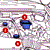

Symposium Video - Setting the Stage
The "Smart Guide"
Background
As the features and options on new cars become more sophisticated, the owners manuals become thicker and less accessible. We worked with General Motors to create a new type of easier-to-read and use manual. Developing several prototype concepts and conducting research to learn their relative strengths and weaknesses, the result is the "Smart Guide," which gives new car owners a quick, easy tour of their vehicles most important controls and features in fewer than 20 pages. We produced the Smart Guides as a GM pilot, used first for the GMC Sonoma Truck and Pontiac Grand Prix. The guides employ clean copy and graphics to illustrate such basic functions as climate control, the audio system, and the safety equipment, as well as sophisticated new features with which a new owner needs to become familiar. Scoring well in research groups, the Smart Guides are now being distributed for the first year as an added value for purchasers of Sonomas and Grand Prixs.